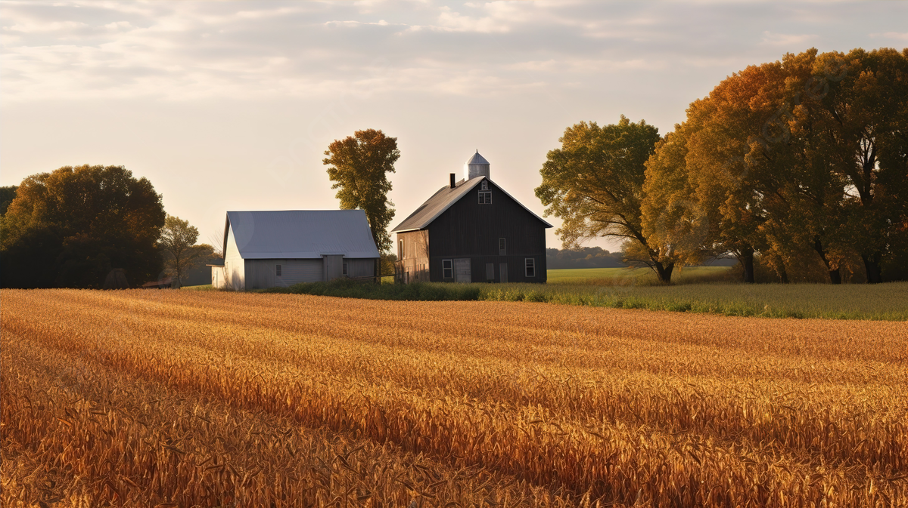

Sua Fazenda
Sua Fazenda é um projeto educacional que visa ensinar aos alunos sobre agricultura, sustentabilidade e conservação ambiental. O projeto é frequentemente utilizado nas escolas brasileiras como uma ferramenta para educar os alunos sobre a importância da agricultura e do meio ambiente.
No contexto de Agrinho, “Sua Fazenda” pode ser uma simulação ou um jogo onde os alunos podem criar e gerir a sua própria quinta virtual, tomando decisões sobre culturas, pecuária e recursos. O objetivo é ensinar aos alunos os desafios e responsabilidades da agricultura, bem como a importância das práticas sustentáveis. Um exemplo de um jogo que ajuda nessas informaçoes: farming simulator simulador de fazenda um dos jogos mais famosos do mundo ele simula muito uma fazenda colheitas e gerenciamente da sua fazenda com isso vem bastante beneficios eles são proporcionar uma experiência divertida e envolvente, o jogo também pode ajudar os jogadores a desenvolver habilidades de gerenciamento, tomada de decisão e resolução de problemas.
exemplo de simuladores que ajudam no desenvolvimento de pecúarias e recursos
Algumas atividades possíveis em "Sua Fazenda" podem incluir:
Plantio e Aumentando e Gerenciando recursos como Lidar com desafios ambientais como pragas, Tomar decisões sobre práticas sustentáveis e Ao participar do “Sua Fazenda”, os alunos podem desenvolver habilidades importantes como pensamento crítico, resolução de problemas e tomada de decisões, além de aprenderem sobre a importância da agricultura e da conservação ambiental.